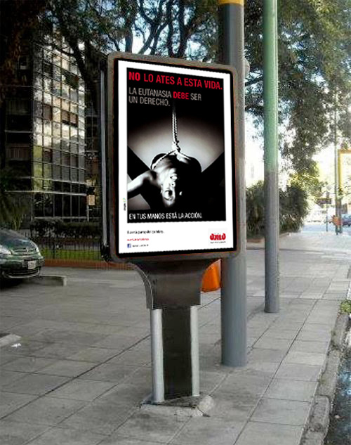

| MEDIO | ¿DE QUE CONSTA? | |
|---|---|---|
| LUNETAS DE COLECTIVO (Vía Pública) | Publicite su marca en un cartel de 2x1mts. con un recorrido diario de más de 500km! En las mejores líneas de Ciudad Autónoma de Buenos Aires y Provincia de Buenos Aires. | |
| PPLs/CHUPETE (Vía Pública) | Los mas deseados por todos, los PPLs! Carteles de placas PAI transiluminados ubicados en las mejores posiciones de veredas de la Ciudad de Buenos Aires. Con una gran visualización y poca vanadlización es la mejor forma de hacer ver tu marca. |  |
| GRANDES FORMATOS (Vía Pública) | Conocidos por todos, los carteles son la mejor forma de captar la atención en los puntos de entrada de Provincia a CABA y viceversa. Grandes formatos partiendo de 7x7 mts., iluminados o hasta personalizados! | |
| TRENES (Vía Pública) | ¿Quien no se subió alguna vez a un tren? Un medio QUE NO FALLA! Con miles de pasajeros por día, es imposible no verlo! | |
| RADIO (Medios tradicionales) | Acompañando a miles de trabajadores diariamente, las radios son la mejor forma de apuntar a un público específico, con las mejores estadísticas de escucha segmentadas en edad/genero y hasta horario. |